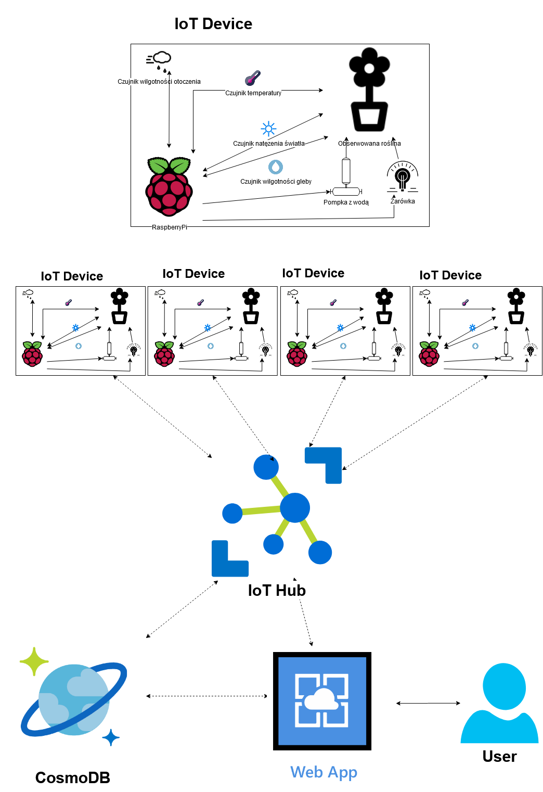

IoTAzurePi - 2@KSDE'2020 Rozproszony system monitoringu zrealizowany w oparciu o chmurę i internet rzeczy
Opis projektu
Celem projektu jest opracowanie rozproszonego systemu monitorowania, zrealizowanego korzystając z chmury (AWS, Azure), oraz koncepcji internetu rzeczy. W ramach projektu należy przygotować urządzenia pomiarowe / monitorujące na bazie komputerów Raspberry Pi, które umożliwią zbieranie oraz przesyłanie danych do platformy administracyjnej / nadzorującej zrealizowanej na bazie dostępnych rozwiązań chmurowych (IoT Core, IoT Hub). System musi umożliwiać zarówna odbieranie wiadomości z urządzeń pomiarowych i przetwarzanie ich na platformie chmurowej, jak i wysyłanie wiadomości (na przykład danych konfiguracyjnych) z panelu administracyjnego w chmurze do urządzeń pomiarowych. Dodatkowo panel administracyjny powinien umożliwiać przeprowadzenia analiz na danych pomiarowych.
Zastosowanie projektu - IoT ogród
Poprzez aplikację WebAppGUI użytkownik mógłby zarządzać swoimi roślinami oraz obserwować dane wysyłane z czujników (temperatura, wilgotność pomieszczenia, wilgotność gleby, natężenie światła) za pomocą prostego GUI. Znajdowałyby się tam odpowiednie funkcję:
- Wizualizacja danych otrzymanych z czujników
- Możliwość sterowania parametrami takimi jak wilgotność gleby czy natężenie światła za pomocą pompki z wodą oraz żarówką, które są sterowane poprzez RaspberryPi.
- Przechowywanie danych w bazie danych CosmoDB
